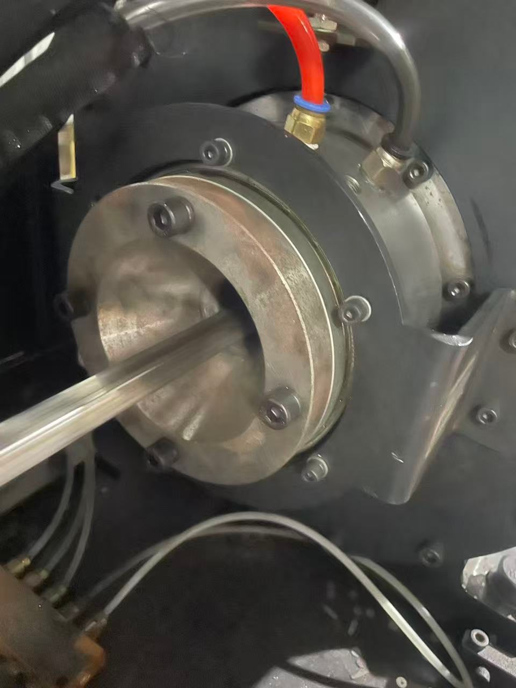
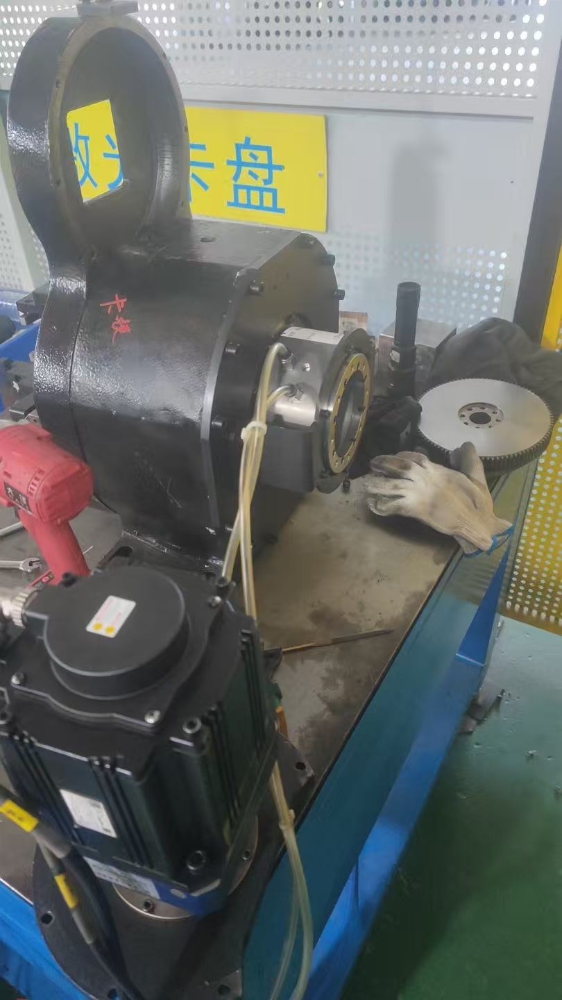

BP-2P-95-0005 – Einbaubeispiel in einem pneumatischen Spannfutter
BP-2P-95-0005 führt in diesem Einbau Druckluft von der feststehenden Seite zum rotierenden Spannfutter. Die Fotos zeigen Einbauposition und Schlauchführung.
Fallübersicht
| Merkmal | Anwendungsdaten |
|---|---|
| Produkt | BP-2P-95-0005 |
| Anwendung | Pneumatische Spannfutterbaugruppe |
| Medium | Druckluft |
| Integrationsart | Druckluftübertragung von der stationären auf die rotierende Seite des Spannfutters |

Detail der Anschlüsse
Die Nahaufnahme zeigt den Einbau am deutlichsten: Erkennbar sind der Montagebereich der Drehdurchführung und zwei sichtbare Druckluftschläuche innerhalb der Spannfutterbaugruppe.
Technische Aufgabe
Die Anordnung verbindet stationäre Druckluftleitungen kompakt mit rotierenden Bauteilen des Spannfutters.
Vor der Konstruktionsfreigabe
- Benötigte Pneumatikkreise und bestellte Produktkonfiguration bestätigen.
- Anschlussausrichtung, Schlauchbiegeradius und Kollisionsfreiheit prüfen.
- Montagemaße mit der freigegebenen Zeichnung der bestellten Ausführung abgleichen.
Foto auswählen, um die JPG-Datei in voller Auflösung zu öffnen.

Gesamtansicht der Baugruppe
Die Gesamtaufnahme zeigt die räumliche Beziehung zwischen Spannfutter, Antriebsbereich, stationären Druckluftleitungen und Einbaubereich der Drehdurchführung.
Einbaudetails
- Die Drehdurchführung befindet sich nahe der Spannfutterachse.
- Die Schläuche auf der stationären Seite sind bis zur Drehdurchführung geführt.
- Der Einbau liegt in einem begrenzten zentralen Bauraum der fotografierten Einheit.
Für einen ähnlichen Einbau
Prüfen Sie Druck, Drehzahl, Betriebszyklus, Freigängigkeit und Anschlussmaße anhand der Spannfutterzeichnung und der tatsächlichen Maschinenbedingungen.
Prüfpunkte für einen vergleichbaren Einbau
Diese Anwendungsdaten sollten vor Bestellung oder Bearbeitung der Gegenbauteile technisch geprüft werden.
| Prüfpunkt | Kundenangabe | Prüfziel |
|---|---|---|
| Pneumatikbedarf | Funktionen der Pneumatikkreise und Medium | Erforderliche Strömungswege mit der bestellten Ausführung abgleichen. |
| Betriebsbedingungen | Druck, Drehzahl und Betriebszyklus | Eignung für die tatsächlichen Maschinenbedingungen schriftlich bestätigen. |
| Mechanische Schnittstelle | Spannfutterzeichnung, Bauraum und Befestigung | Maße, Konzentrizität und Kollisionsfreiheit prüfen. |
| Schlauchführung | Anschlussrichtung, Schlauchgröße und Biegeradius | Die rotierende Schnittstelle von äußeren Schlauchlasten entlasten. |
Ein Spannfutterprojekt mit Begapunk prüfen
Senden Sie Spannfutterzeichnung, Pneumatikanforderungen, Bauraum und Betriebsbedingungen für eine modellspezifische Prüfung.